Code examples for “Designing Sound” textbook
Chapter 20: Technique 4 - Modulation
Signal multiplication
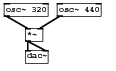
#N canvas 173 132 150 91 10; #X obj 4 3 osc~ 320; #X obj 74 3 osc~ 440; #X obj 32 36 *~; #X obj 32 65 dac~; #X connect 0 0 2 0; #X connect 1 0 2 1; #X connect 2 0 3 0; #X connect 2 0 3 1;
Download multiplication.pd.
Ring modulation
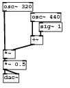
#N canvas 173 132 142 158 10; #X obj 4 3 osc~ 320; #X obj 58 23 osc~ 440; #X obj 5 94 *~; #X obj 5 140 dac~; #X obj 74 42 sig~ 1; #X obj 58 67 +~; #X obj 5 115 *~ 0.5; #X connect 0 0 2 0; #X connect 1 0 5 0; #X connect 2 0 6 0; #X connect 4 0 5 1; #X connect 5 0 2 1; #X connect 6 0 3 0; #X connect 6 0 3 1;
Download am.pd.
all band AM
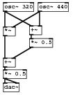
#N canvas 173 132 138 176 10; #X obj 4 3 osc~ 320; #X obj 70 3 osc~ 440; #X obj 4 49 *~; #X obj 4 155 dac~; #X obj 54 47 +~; #X obj 4 108 +~; #X obj 4 130 *~ 0.5; #X obj 54 71 *~ 0.5; #X connect 0 0 2 0; #X connect 0 0 4 0; #X connect 1 0 2 1; #X connect 1 0 4 1; #X connect 2 0 5 0; #X connect 4 0 7 0; #X connect 5 0 6 0; #X connect 6 0 3 0; #X connect 6 0 3 1; #X connect 7 0 5 1;
Download 2bandam.pd.
Cascade AM
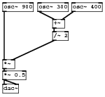
#N canvas 322 471 196 178 10; #X obj 4 156 dac~; #X obj 98 34 +~; #X obj 70 3 osc~ 300; #X obj 98 57 /~ 2; #X obj 4 3 osc~ 900; #X obj 134 3 osc~ 400; #X obj 4 110 *~; #X obj 4 131 *~ 0.5; #X connect 1 0 3 0; #X connect 2 0 1 0; #X connect 3 0 6 1; #X connect 4 0 6 0; #X connect 5 0 1 1; #X connect 6 0 7 0; #X connect 7 0 0 0; #X connect 7 0 0 1;
Download complexam2.pd.
Complex AM 2
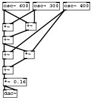
#N canvas 173 132 222 222 10; #X obj 4 49 *~; #X obj 5 194 dac~; #X obj 54 47 +~; #X obj 4 77 +~; #X obj 4 110 +~; #X obj 50 109 *~; #X obj 4 143 +~; #X obj 4 3 osc~ 600; #X obj 136 3 osc~ 400; #X obj 70 3 osc~ 300; #X obj 5 169 *~ 0.16; #X connect 0 0 3 0; #X connect 2 0 3 1; #X connect 3 0 4 0; #X connect 3 0 5 0; #X connect 4 0 6 0; #X connect 5 0 6 1; #X connect 6 0 10 0; #X connect 7 0 0 0; #X connect 7 0 2 0; #X connect 8 0 5 1; #X connect 8 0 4 1; #X connect 9 0 0 1; #X connect 9 0 2 1; #X connect 10 0 1 0; #X connect 10 0 1 1;
Download complexam.pd.
Single sideband modulation
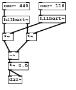
#N canvas 100 113 152 198 10; #X obj 4 33 hilbert~; #X obj 4 3 osc~ 440; #X obj 83 31 hilbert~; #X obj 4 70 *~; #X obj 55 70 *~; #X obj 16 111 -~; #X obj 16 164 dac~; #X obj 16 134 *~ 0.5; #X obj 83 3 osc~ 110; #X connect 0 0 3 0; #X connect 0 1 4 0; #X connect 1 0 0 0; #X connect 2 0 3 1; #X connect 2 1 4 1; #X connect 3 0 5 0; #X connect 4 0 5 1; #X connect 5 0 7 0; #X connect 7 0 6 0; #X connect 7 0 6 1; #X connect 8 0 2 0;
Download singlesideband.pd.
FM signal names
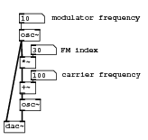
#N canvas 86 109 213 201 10; #X obj 21 143 osc~; #X obj -2 175 dac~; #X floatatom 20 18 5 0 0 0 - - -; #X text 66 16 modulator frequency; #X obj 20 41 osc~; #X obj 21 81 *~; #X floatatom 37 64 5 0 0 0 - - -; #X obj 21 118 +~; #X floatatom 37 101 5 0 0 0 - - -; #X text 79 64 FM index; #X text 80 100 carrier frequency; #X connect 0 0 1 1; #X connect 2 0 4 0; #X connect 4 0 5 0; #X connect 4 0 1 0; #X connect 5 0 7 0; #X connect 6 0 5 1; #X connect 7 0 0 0; #X connect 8 0 7 1;
Download fm-basic03.pd.
See relation between modulator and FM signal
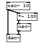
#N canvas 86 109 93 94 10; #X obj 36 50 osc~; #X obj 13 74 dac~; #X obj 13 3 osc~ 10; #X obj 36 27 *~ 100; #X connect 0 0 1 1; #X connect 2 0 1 0; #X connect 2 0 3 0; #X connect 3 0 0 0;
Download fm-basic02.pd.
Simple FM 1 - no modulator
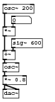
#N canvas 173 132 100 187 10; #X obj 4 49 *~; #X obj 4 165 dac~; #X obj 4 93 +~; #X obj 4 116 osc~; #X floatatom 20 29 5 0 0 0 - - -; #X obj 4 140 *~ 0.8; #X obj 20 71 sig~ 600; #X obj 4 7 osc~ 200; #X connect 0 0 2 0; #X connect 2 0 3 0; #X connect 3 0 5 0; #X connect 4 0 0 1; #X connect 5 0 1 0; #X connect 5 0 1 1; #X connect 6 0 2 1; #X connect 7 0 0 0;
Download simplefm1.pd.
Simple FM 2 - modulator 50
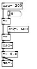
#N canvas 173 132 118 212 10; #X obj 4 49 *~; #X obj 4 165 dac~; #X obj 4 93 +~; #X obj 4 116 osc~; #X obj 4 140 *~ 0.8; #X obj 20 71 sig~ 600; #X obj 4 7 osc~ 200; #X obj 21 28 sig~ 50; #X connect 0 0 2 0; #X connect 2 0 3 0; #X connect 3 0 4 0; #X connect 4 0 1 0; #X connect 4 0 1 1; #X connect 5 0 2 1; #X connect 6 0 0 0; #X connect 7 0 0 1;
Download simplefm2.pd.
Simple FM 3 - modulator 200
#N canvas 173 132 118 212 10; #X obj 4 49 *~; #X obj 4 165 dac~; #X obj 4 93 +~; #X obj 4 116 osc~; #X obj 4 140 *~ 0.8; #X obj 20 71 sig~ 600; #X obj 4 7 osc~ 200; #X obj 21 28 sig~ 200; #X connect 0 0 2 0; #X connect 2 0 3 0; #X connect 3 0 4 0; #X connect 4 0 1 0; #X connect 4 0 1 1; #X connect 5 0 2 1; #X connect 6 0 0 0; #X connect 7 0 0 1;
Download simplefm3.pd.
Complex FM
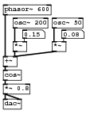
#N canvas 49 127 159 187 10; #X obj 20 68 *~; #X obj 4 164 dac~; #X obj 4 93 +~; #X floatatom 36 49 5 0 0 0 - - -; #X obj 4 139 *~ 0.8; #X obj 4 116 cos~; #X obj 20 29 osc~ 200; #X obj 4 7 phasor~ 600; #X obj 85 68 *~; #X floatatom 101 49 5 0 0 0 - - -; #X obj 85 29 osc~ 50; #X connect 0 0 2 1; #X connect 2 0 5 0; #X connect 3 0 0 1; #X connect 4 0 1 0; #X connect 4 0 1 1; #X connect 5 0 4 0; #X connect 6 0 0 0; #X connect 7 0 2 0; #X connect 8 0 2 1; #X connect 9 0 8 1; #X connect 10 0 8 0;
Download complexfm.pd.
Phase modulation
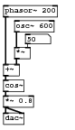
#N canvas 146 127 107 187 10; #X obj 20 68 *~; #X obj 4 164 dac~; #X obj 4 93 +~; #X floatatom 36 49 5 0 0 0 - - -; #X obj 4 139 *~ 0.8; #X obj 4 7 phasor~ 200; #X obj 4 116 cos~; #X obj 20 29 osc~ 600; #X connect 0 0 2 1; #X connect 2 0 6 0; #X connect 3 0 0 1; #X connect 4 0 1 0; #X connect 4 0 1 1; #X connect 5 0 2 0; #X connect 6 0 4 0; #X connect 7 0 0 0;
Download phasemod.pd.
- Index
- Chapters 9 to 14
- Introductory Pure Data
- 9: Starting with Pure Data
- 10: Using Pure Data
- 11: Pure Data Audio
- 12: Abstraction
- 13: Shaping Sound
- 14: Pure Data Essentials
- Chapters 17 to 21
- Techniques
- 17: Summation
- 18: Tables
- 19: Non-linear
- 20: Modulation
- 21: Granular Methods
- Practical Series 1
- Artificial Sounds
- 1: Pedestrian Crossing
- 2: Telephone Siganlling Tones
- 3: DTMF Dialling Tones
- 4: Alarm and Menu Sounds
- 5: Police Siren
- Practical Series 2
- Idiophonics
- 6: Telephone Bell
- 7: Bouncing Ball
- 8: Rolling Tin Can
- 9: Creaking Door
- 10: Boingy Sound
- Practical Series 3
- Nature
- 11: Fire
- 12: Bubbles
- 13: Running Water
- 14: Pouring
- 15: Rain
- 16: Electricity
- 17: Thunder
- 18: Wind
- Practical Series 4
- Machines
- 19: Switches
- 20: Clocks
- 21: Motors
- 22: Cars
- 23: Fans
- 24: Jet Engine
- 25: Helicopter
- Practical Series 5
- Practical Series 6
- Project Mayhem
- 30: Guns
- 31: Explosions
- 32: Rocket Launcher
- Practical Series 7
- Science Fiction
- 33: Transporter
- 34: R2D2
- 35: Red Alert